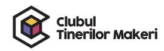
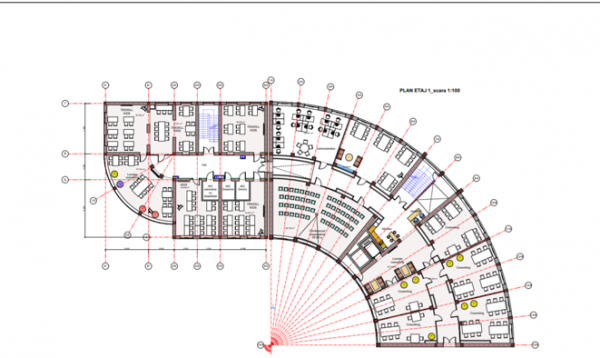

INFORMAȚIE
Acasă
CURSURI
Tekwill in Balti
Centrul de Inovare și Transfer Tehnologic din Bălți, găzduit de Universitatea de Stat din Bălți, este așteptat să se deschidă în septembrie 2021 și va servi ca un accelerator de inovare și economic pentru regiunea de nord a țării, oferind studenților și tinerilor profesioniști acces la laboratoare, săli de instruire, zone de lucru în comun și birouri de afaceri pentru startup-uri din TIC, auto, producție de modă și alte industrii regionale.

Ca parte a expansiunii regionale, Tekwill a subcontractat o companie de proiectare pentru viitorul Centru Bălți pentru a se alinia la obiectivele proiectului, a elaborat un Memorandum de înțelegere care urmează să fie semnat cu Bălți parte a planului de acțiune pentru 2021, a elaborat o foaie de parcurs de activități pentru dezvoltarea regională, precum și cursuri pilotate Tekwill Academy și Tekwill Academy Kids, așa cum este descris în continuare în compartimentul de extindere regională.
In timp ce infrastructura fizică este asigurată și finanțată din sursele Fondului Național de Dezvoltare Regională (FNDR) și implementată de ADR Nord, Tekwill s-a angajat să dezvolte configurația de design interior în funcție de nevoia ca programele sale să fie implementate. Proiectul Tekwill planificat pentru dotare și lucrări de finisare planificate pentru a transforma spațiul într-unul condus de Tekwill.
Valoarea investițiilor planificate pentru Centrul pentru Inovații și Transfer Tehnologic, finanțate din surse USAID și Suedia, în valoare de 500.000 USD, sunt alocate pentru dotarea Centrului și lucrările de finisare planificate. Prin urmare, Tekwill lucrează cu Dumitru Carbuni, Director al companiei Laboratorul de Proiectare, selectat printr-un Apel Public pentru a furniza servicii de proiectare pentru rețeaua proiectului Tekwill și Centrele de tip Tekwill din toată Moldova. Designerul a sprijinit echipa în selectarea spațiilor, în elaborarea ghidurilor de proiectare, a dezvoltat amenajarea interioară, a dezvoltat concepte de mobilier, în timp ce echipa și managerul tehnic urmau să revizuiască lista planificată a echipamentelor și dotării necesare.